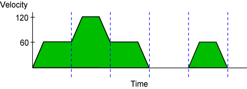

Example with Velocity Profiling
Example with Velocity Profiling' Enable velocity blending mode. VELOCITY ON ' Enable incremental programming mode. INCREMENTAL ' Set the vector feedrate to 60. F60. ' Move the X axis 1.0. LINEAR X1. ' Set the vector feedrate to 120. F120. ' Move the X axis 2.0. LINEAR X2. ' Set the vector feedrate to 60. F60. ' Move the X axis 1.0. LINEAR X1. ' Dwell for one second. DWELL 1 ' This move accelerates from 0 velocity because a DWELL command preceded it. LINEAR X1.
Figure: Example of a Velocity Profile with VELOCITY ON

 2001-
2001-